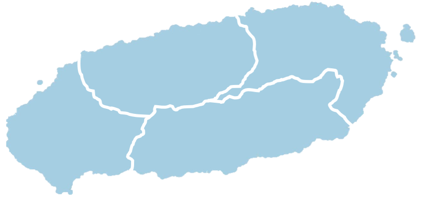

여행하고 싶은 구역을 골라보세요!
제주도의 꿈같은 여행지가 청춘 여러분의 선택을 기다리고있습니다.
#자연 #문화관광 #레저 #체험 #테마관광지 #도보 #포토스팟
제주도의 꿈같은 여행지가 청춘 여러분의 선택을 기다리고있습니다.
#자연 #문화관광 #레저 #체험 #테마관광지 #도보 #포토스팟
Send a message to us
제주도엔 삼다, 삼무의 섬이라는 말이 전해지고 있습니다.
제주도를 사랑했던 곤충학자인 석주명이 제주도의 지역적 특성을 삼다, 삼무에 함축하면서 제주도의 상징어가 되었고 삼다도로 불리게 되었습니다.
먼저 삼다(三多)에는 첫 번째로는 돌입니다. 제주도는 집의 담장과 벽체도 돌로 쌓아 올리고, 토지의 경계도 돌로 쌓아 구분할 정도로 돌이 많아 기름진 땅이 귀하고 물이 귀한 섬이었다고 합니다.
두 번째로는 제주도의 많은 바람 입니다. 제주도는 아직도 강풍과 다풍지역으로 손꼽히고 있어요. 또한 제주의 의·식·주에 모두 영향을 주었을 정도에요.
세 번째로는 여자입니다. 외세의 침탈로 남자들이 많이 희생되거나 고역을 치웠기 때문에 여자가 우세하게 많았으며 과거 밭일을 하는 여성들이 눈에 많이 띄어서 특이점이 되기도 했다고 해요.
제주도의 삼무(三無)의 첫 번째로는 도둑입니다. 정직하고 순박하며 자신의 일을 해치며 남에게 기대려 하지 않았던 제주 주민들의 생활을 엿볼 수 있는 부분입니다.
두 번째로는 거지입니다. 제주의 땅은 화산섬이라는 영향때문에 척박하기 그지 없었는데요. 그래도 최선을 다하며 부지런히 자신의 일을 했고, 물건을 아꼈다고 합니다.
제주도엔 없는 대문입니다. 도둑이 없고, 거지가 없기 때문에 대문이 없다는 이야기가 나왔는데요. 전통의 제주 가옥에는 대문이 없었고 대문 대신 양편으로 정주목을 세우고 거기에 정낭을 걸쳐 두어 집에 주인이 있으냐, 없느냐를 나타냈답니다.